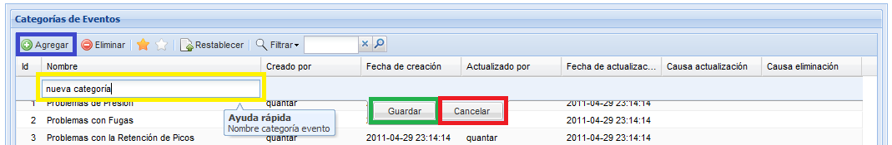
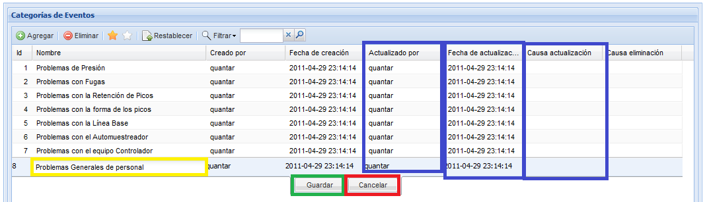
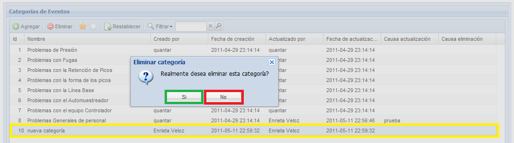
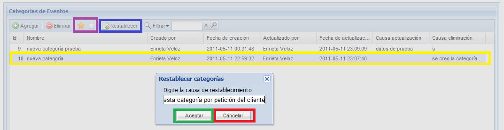

Agregar categoría
Para agregar una categoría pulse el botón Agregar, el sistema desplegará en la parte superior de la lista una nueva fila, diligencie el nombre de la nueva categoría en la fila que aparece encima de la lista y pulse el botón Guardar.
El sistema mostrara un breve mensaje en el que informa si ha creado con
éxito la nueva categoría. En la figura 2 puede observar la pantalla de
creación de las categorías. Los campos fecha de creación y creado por nos darán información sobre el usuario que registró la información y la fecha en la cual realizo el registro.

Figura 2.Pantalla de creación de nueva categoría.
Actualizar
Para actualizar una categoría, de doble click sobre la categoría que desea modificar, edite el nombre y pulse el botón guardar, el sistema le preguntará porque razón desea
actualizar esta información, digite la razón y pulse el botón aceptar. Luego el sistema le mostrara un breve mensaje en el que informa del éxito de la actualización. En las columnas actualizado por ,fecha actualización y causa actualización,
podra observar porque han sido modificados los registro y quién ha
realizado el último cambio repectivo. En la figura 3 se muestra como se
actualizaria una categoría y permite laidentificación de los botones de
guardar y cancelar la actualización.

Figura 3. Pantalla actualización de categoría de eventos.
Eliminar
Para eliminar una categoría, seleccione de la lista categorías la que desea eliminar, y pulse el botón eliminar, el
sistema desplegara una pequeña ventana donde le preguntara si realmente
desea eliminar la categoría y porque razón desea eliminarlo, digite la
razón y pulse el botón aceptar.
Luego el sistema le mostrara un breve mensaje en el que informa del
éxito de la eliminación.En el listado de categorías eliminadas(estrella blanca) podra observar el registro que eliminó anteriormente.
En la figura 4 se muestra la pantalla de confirmación de eliminacion de una categoría.

Figura 4. Ventana confirmación de eliminación de categoría.
Restablecer
Si se ha eliminado una categoría de eventos, usted tiene la posibilidad de recuperar la información,
seleccione la opción para ver las categorías eliminadas (estrella blanca), seleccione de la lista la que desea recuperar, y pulse el botón Restablecer, el sistema le preguntara porque razón usted desea restablecer la categoría, digite la razón y pulse el botón aceptar. Luego el sistema le mostrara un breve mensaje en el que informa si se ha restablecido con éxito.
Si se ha restablecido con éxito volverá a aparecer en la lista de
categorías activas (identificado con estrella amarilla). En la figura 5
se muestra la ventana de registro de causa de restablecimiento y se
identifican los botónes de restablecer, y listado de categorías activas
y eliminadas.

Figura 5.Ventana de registro de causa de restablecimiento de una categoría.